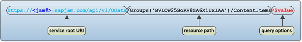

Introduction
The SAP Jam Communities OData API allows you to integrate SAP Jam Communities
features into your business critical applications. It also allows you to integrate
data from your business critical applications into SAP Jam Communities.
Note: The SAP Jam Communities OData API is the foundational technology for the
integration of SAP Jam into your business-critical applications. A very few of SAP
Jam Communities's old REST API calls have not yet been migrated to OData. These will
soon be migrated. Also, new SAP Jam Communities API features will be developed in
the OData API. All new API features are being developed in the OData API.
OData and the SAP Jam Communities OData API implementation
Open Data protocol (OData) was originated by Microsoft and SAP, but it is now
developed and maintained by OASIS. OData provides a very formalized, well-defined
approach to creating a RESTful web API based on the Atom Publishing protocol. The
OData specification requires that APIs be available in either XML (AtomPub) or JSON.
The SAP Jam Communities OData API conforms to the OData version 2 specification,
although it is subject to change in the ways allowed by the OData version 4
specification, with regard to adding new properties, navigations, and entity types.
Although every effort is made not to break backwards compatibility, security issues
that require a breaking change will be made.
Some OData terminology
The following table shows some OData terminology. OData terminology is a bit
problematic, as it is drawn from the various constituent technologies, which don't
always have the same usage of terms. To illustrate these issues, some approximate
equivalents from Atom (XML), JSON, and HTTP usage are shown as well.
| OData (with definition) |
Atom (XML) |
JSON |
HTTP |
| property: an attribute-value pair that describes a single
aspect of a resource |
property |
property |
NE |
| entity, resource, or object: a network-accessible data
object or service that can be identified by a URI; typically a
resource is described by a predefined set of properties (from
HTTP) |
entry (also used in OData) |
object |
resource (entity is Diff) |
| EntityType: the abstract data model of a type of
resource |
NE |
NE |
NE |
| collection: a set of resources, often returned to a GET
request for a certain type of resource |
feed |
array of objects |
NE |
NE: no equivalent
Diff: has a very different use of the term
URI Conventions
As with RESTful APIs, OData APIs are accessed via HTTP 1.1 calls. A URI
used by an OData service has up to three significant parts, as shown in the diagram
below: the service root URI, the resource path, and the query options.

- The service root URI identifies the root of an OData service. A generalized form
of the service root URI is shown for the SAP Jam Communities OData API.
- The resource path identifies the resource to be interacted with. In the
preceding diagram, the resources involved are one or more Conversations in the
SAP Jam Communities Topic that is specified by its unique ID.
- Query options are, as the name indicates, optional. There can be "system query
options" (indicated with a preceding dollar sign "$", and which are documented
in the OData System Query Options. In this example, the
$value option get the raw value of the property, which for
a POST operation would upload a content item.
There can also be "custom query
options" (not currently used in the SAP Jam Communities OData API) and
"service operation parameters", which are discussed in the following page,
Reading the OData $metadata file.
<communities#> Usage in the URLs
SAP Jam Communities services are located in data centers in various
locations around the world. Your organization's SAP Jam Communities service will be
at one of these locations, which must appear in the URL of your API calls, and which
is indicated in this documentation by <communities#>. Consult your company's
SAP Jam Communities expert for the proper content of this part of your SAP Jam
Communities API URLs.
Unique IDs
The SAP Jam Communities OData API uses 22-character unique identifiers
for the various objects in SAP Jam Communities.
OData System Query Options
The SAP Jam Communities OData API supports OData system queries with a
number of limitations to ensure system responsiveness.
See the OData v.2 Specification's discussion of OData System Query Options.
Links between entries
The OData specification allows for the creation of links between entries. For
example, in the SAP Jam Communities OData API there are Groups (structured areas for
collaboration on a particular topic area) and ExternalObjects (business records from an
external application), so to set an ExternalObject as a featured item in a group, you
would link the two together. For example:
https://<your_company>.<communities#>.sapjam.com/api/v1/OData/Groups('key')/$links/FeaturedExternalObjects
HTTP requests
Like REST, OData uses POST, GET, PATCH or PUT, and DELETE HTTP requests
to perform create, retrieve, update, and delete (CRUD) operations.
XML or JSON payloads
Like REST, OData uses XML or JSON payloads, either in POST and PATCH
requests to create and update a resource, or in POST and GET responses to report the
created resource or the retrieved resource. Unlike REST, OData resources are highly
formalized, with the entities, their properties and navigations, and their
associations or navigations very clearly defined, and those definitions typically
published in the OData service's $metadata
file.
CSDL
Conceptual Schema Definition Language (CSDL) is an XML-based language
that describes the entities, relationships, and functions that make up a conceptual
model of a data-driven application.
key
The one or two properties required to identify a specific resource. The
key value(s) is commonly used in the requesting URL to perform an action on the
specified resource. Only "key" is shown in the signature or "resource path" of an
API endpoint (the title of the endpoint reference page), but it is expanded to show
the required property or properties in the full URL, and it is shown with
sample values in the Curl Commands throughout the OData API reference
pages.
Entity Data Model
Data in the SAP Jam Communities OData API is represented in accordance
with the Entity Data Model (EDM). The Entity Data Model specifies a set of data
types (for example, Edm.Int32, Edm.String, Edm.Boolean, and Edm.DateTimeOffset) be
used in the set of properties used to describe a resource (an Entry). A collection
of Entries is termed to a Feed. An OData API supports the create, retrieve, update,
and delete (CRUD) operations familiar to REST API users via HTTP 1.1 URIs, using
HTTP 1.1 POST, GET, PATCH or PUT, and DELETE operations.
For more information on the Entity Data Model, see:
Declared and Dynamic Properties
The properties that define a resource or Entry can be Declared or
Dynamic Properties. Declared properties of an Entity can be either a primitive or a
complex data type. Dynamic properties are nullable properties, which may vary
between Entry instances.
Generated Properties
Many properties, such as timestamps, counts, and many boolean values,
are generated by the SAP Jam Communities service, typically in response to user
actions or selected system configuration options. Generated properties will be
ignored if set in a POST or PATCH operation.
Binary Large Object (BLOB)
Binary data that is stored as a single entity, typically videos,
graphics, office documents, and PDFs.
The OData specification describes Creating Media Link Entries (MLEs) in section 2.5 of the Operations
page.
Note that API clients should be able to follow redirect responses, which are required
for the improved performance of using Content Distribution Networks (CDN).
HTTP Status Codes
SAP Jam Communities API requests receive relevant HTTP status codes in
response to successful and failed requests.
The successful requests are typically:
- 200 OK: In response to a successful GET request, a full payload of the
requested resource entry or feed of entries is returned.
- 201 Created: In response to a successful POST request, a full payload of
the created resource is returned, and the location of the created resource is
included in the returned Location HTTP header.
- 204 No Content: There are three successful response scenarios:
- In response to a POST request that does not create a resource, the
requested resource post is successful; as no content is created, no
payload is returned.
- In response to a PATCH request, the requested resource patch is
successful; no payload is returned.
- In response to a DELETE request, the requested resource deletion is
successful; no payload is returned.
Requests that fail or encounter problems are typically:
- 400 Bad Request: The server could not understand the request due
to malformed syntax.
- 403 Forbidden: Access to the resource you are trying to connect
to is forbidden. This may be due to either a user authentication failure or to
the user having insufficient privileges to perform the action.
- 404 Not Found: The server cannot find the specified resource.
This is typically due to an unrecognized resource ID (such as userId, groupId,
or contentId).
- 405 Method Not Allowed: The method specified in the Request Line
is not allowed for the resource identified by the Request URI.
- 406 Not Acceptable: The resource identified by the request is
only capable of generating response entities which have content characteristics
not acceptable according to the accept headers sent in the request. This is the
expected response if the HTTP headers request a ContentType that cannot be
handled by the API or the indicated endpoint of the API.
- 409 Conflict: There is an internal access conflict to the
specified resource.
- 429 Too Many Requests: The user has sent too many requests in a
given period of time. This error message is typically encountered if API rate
limits, set to protect against DoS attacks and to preserve server
responsiveness, have been exceeded. See Rate Limits to view
the established limits.
- 500 Internal Server Error: The server encountered an unexpected
condition, which prevented it from fulfilling the request.
- 501 Not Implemented: The server does not support the
functionality required to fulfill the request.
Note: Clients should gracefully handle error responses. For example, if SAP Jam
Communities is under maintenance, or the API quota (
rate limits) is
exhausted, an error can occur. Any specific API call can produce an error
result.
Note: Detailed error message text is subject to change and should not be relied upon or
parsed.
Rate Limits
The SAP Jam Communities service imposes API call rate limits per user
per time span to ensure server responsiveness. These requests are measured in units.
There is a burst limit of 200 units per minute, every minute, and there is an hourly
limit of 800 units per hour. Note that these rate limits are subject to change
without notice, but they are set to balance server responsiveness with substantial
use of API calls.